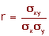
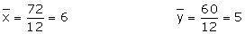
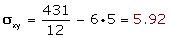
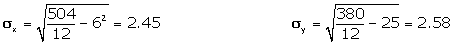
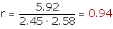
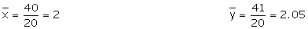
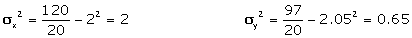
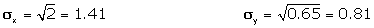
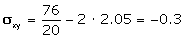
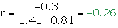

Coeficiente de correlación
Coeficiente de correlación lineal
El coeficiente de correlación lineal es el cociente entre la covarianza y el producto de las desviaciones típicas de ambas variables.
El coeficiente de correlación lineal se expresa mediante la letra r.

Propiedades del coeficiente de correlación
1. El coeficiente de correlación no varía al hacerlo la escala de medición.
Es decir, si expresamos la altura en metros o en centímetros el coeficiente de correlación no varía.
2. El signo del coeficiente de correlación es el mismo que el de la covarianza.
Si la covarianza es positiva, la correlación es directa.
Si la covarianza es negativa, la correlación es inversa.
Si la covarianza es nula, no existe correlación.
3. El coeficiente de correlación lineal es un número real comprendido entre −1 y 1.
−1 ≤ r ≤ 1
4. Si el coeficiente de correlación lineal toma valores cercanos a −1 la correlación es fuerte e inversa, y será tanto más fuerte cuanto más se aproxime r a −1.
5. Si el coeficiente de correlación lineal toma valores cercanos a 1 la correlación es fuerte y directa, y será tanto más fuerte cuanto más se aproxime r a 1.
6. Si el coeficiente de correlación lineal toma valores cercanos a 0, la correlación es débil.
7. Si r = 1 ó −1, los puntos de la nube están sobre la recta creciente o decreciente. Entre ambas variables hay dependencia funcional.
Las notas de 12 alumnos de una clase en Matemáticas y Física son las siguientes:
| Matemáticas | 2 | 3 | 4 | 4 | 5 | 6 | 6 | 7 | 7 | 8 | 10 | 10 |
| Física | 1 | 3 | 2 | 4 | 4 | 4 | 6 | 4 | 6 | 7 | 9 | 10 |
Hallar el coeficiente de correlación de la distribución e interpretarlo.
| xi | yi | xi ·yi | xi2 | yi2 |
|---|---|---|---|---|
| 2 | 1 | 2 | 4 | 1 |
| 3 | 3 | 9 | 9 | 9 |
| 4 | 2 | 8 | 16 | 4 |
| 4 | 4 | 16 | 16 | 16 |
| 5 | 4 | 20 | 25 | 16 |
| 6 | 4 | 24 | 36 | 16 |
| 6 | 6 | 36 | 36 | 36 |
| 7 | 4 | 28 | 49 | 16 |
| 7 | 6 | 42 | 49 | 36 |
| 8 | 7 | 56 | 64 | 49 |
| 10 | 9 | 90 | 100 | 81 |
| 10 | 10 | 100 | 100 | 100 |
| 72 | 60 | 431 | 504 | 380 |
1º Hallamos las medias aritméticas.

2º Calculamos la covarianza.

3º Calculamos las desviaciones típicas.

4º Aplicamos la fórmula del coeficiente de correlación lineal.

Al ser el coeficiente de correlación positivo, la correlación es directa.
Como coeficiente de correlación está muy próximo a 1 la correlación es muy fuerte.
Los valores de dos variables X e Y se distribuyen según la tabla siguiente:
| Y/X | 0 | 2 | 4 |
|---|---|---|---|
| 1 | 2 | 1 | 3 |
| 2 | 1 | 4 | 2 |
| 3 | 2 | 5 | 0 |
Determinar el coeficiente de correlación.
Convertimos la tabla de doble entrada en tabla simple.
| xi | yi | fi | xi · fi | xi2 · fi | yi · fi | yi2 · fi | xi · yi · fi |
|---|---|---|---|---|---|---|---|
| 0 | 1 | 2 | 0 | 0 | 2 | 2 | 0 |
| 0 | 2 | 1 | 0 | 0 | 2 | 4 | 0 |
| 0 | 3 | 2 | 0 | 0 | 6 | 18 | 0 |
| 2 | 1 | 1 | 2 | 4 | 1 | 1 | 2 |
| 2 | 2 | 4 | 8 | 16 | 8 | 16 | 16 |
| 2 | 3 | 5 | 10 | 20 | 15 | 45 | 30 |
| 4 | 1 | 3 | 12 | 48 | 3 | 3 | 12 |
| 4 | 2 | 2 | 8 | 32 | 4 | 8 | 16 |
| 20 | 40 | 120 | 41 | 97 | 76 |





Al ser el coeficiente de correlación negativo, la correlación es inversa.
Como coeficiente de correlación está muy próximo a 0 la correlación es muy débil.